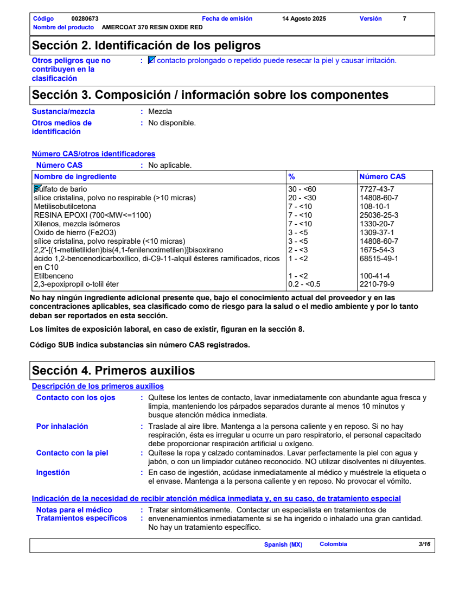

| Nombre de ingrediente | % | Número CAS |
|---|---|---|
| Sulfato de bario | 30 - <60 20 - <30 7 - <10 7 - <10 7 - <10 3 - <5 3 - <5 2 - <3 1 - <2 1 - <2 | 7727-43-7 14808-60-7 108-10-1 25036-25-3 1330-20-7 1309-37-1 14808-60-7 1675-54-3 68515-49-1 100-41-4 2210-79-9 |
| sílice cristalina, polvo no respirable (>10 micras) | ||
| Metilisobutilcetona | ||
| RESINA EPOXI (700<MW<=1100) | ||
| Xilenos, mezcla isómeros | ||
| Oxido de hierro (Fe2O3) | ||
| sílice cristalina, polvo respirable (<10 micras) | ||
| 2,2'-[(1-metiletiliden)bis(4,1-fenilenoximetilen)]bisoxirano | ||
| ácido 1,2-bencenodicarboxílico, di-C9-11-alquil ésteres ramificados, ricos en C10 | ||
| Etilbenceno | ||
| 2,3-epoxipropil o-tolil éter | 0.2 - <0.5 |